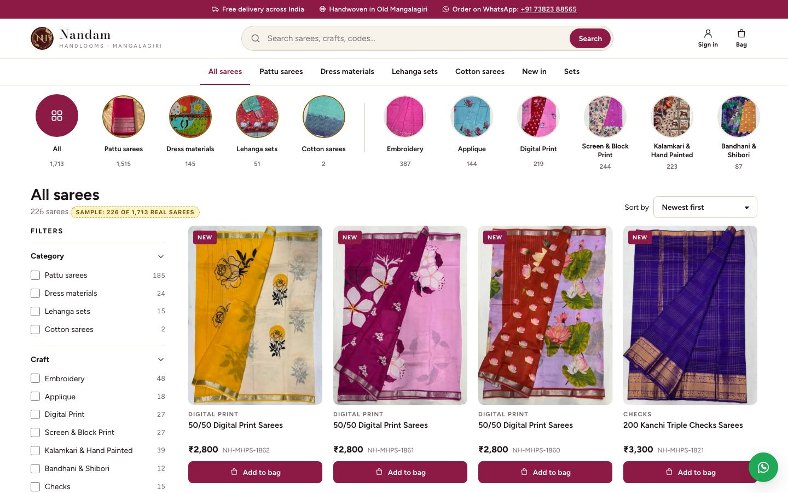
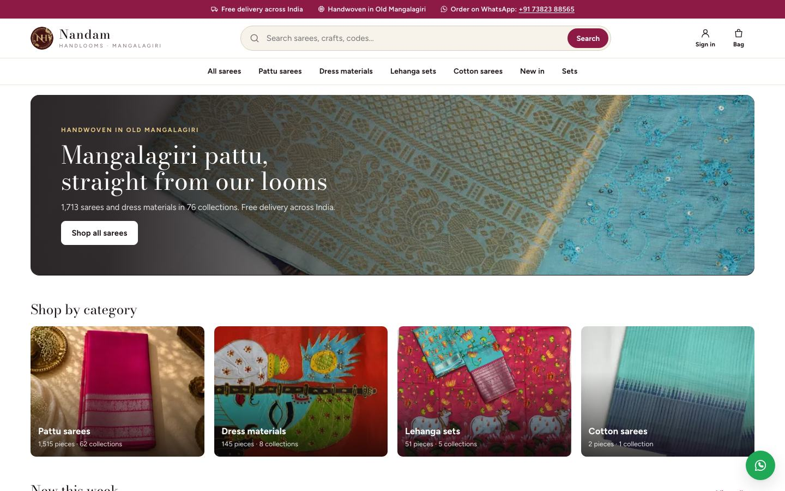
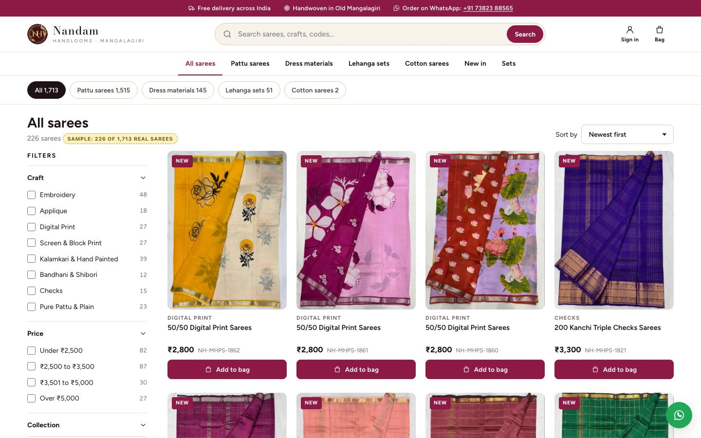
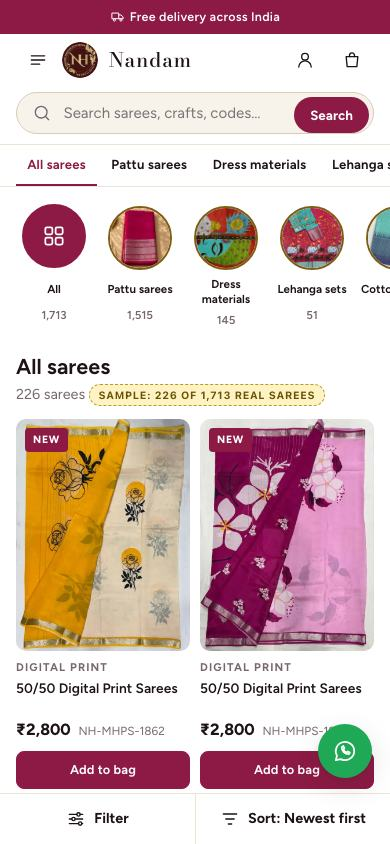

Products first: a typical online shop
What the client pictures: when the website opens, the sarees are right there, like on Myntra or Amazon. Search at the top, the categories under it, filters and sorting, a grid of sarees with price and "Add to bag", then the saree page, the bag, sign in, checkout, the order and My orders. Every screen is clickable, in the shop's own colours, with real sarees from the live website.
The other two to compare: the live website today (nandamhandlooms.com, the big photo carousel) and the categories-first mock-up (the same website with the carousel replaced by the categories).
What opens first: three ways
AThe sarees straight away

The categories and crafts as round photos, then filters and the grid of sarees with price and Add to bag: what the client describes. Recommended.
Open ABOne banner, then rows

One still banner (not a carousel), four category cards, then sliding rows: new this week, under ₹2,500, pure pattu, sets.
Open BCCategory tabs over the grid

Tabs for All, Pattu sarees, Dress materials, Lehanga sets and Cotton sarees, then the grid.
Open C
Every screen
Your choices
| Choice | A (recommended) | B | C |
|---|---|---|---|
| 1. What opens first | The sarees straight away: categories as round photos, filters, the grid | One banner, the categories, then rows of sarees (new, under ₹2,500, pure pattu, sets) | Category tabs over the grid |
| 2. The saree card | Photo, name, price, code and "Add to bag" | Minimal: a round + on the photo | Detailed: "Only 1 left" and a WhatsApp button |
| 3. Filters on a laptop | A column on the left | A bar of drop-downs across the top | |
| 4. Search | A search bar in the header | A search icon (more room for the logo) | |
| 5. The saree page | Photo and details side by side | A bigger photo | |
| Look | Wine and gold, Bodoni + Figtree, soft corners | Classic red and gold · Figtree only · crisp corners | Modern teal · the phone's own font |
Switch them with Design options (bottom left) on any page, then Copy my choices and send the text. Phones always get the Filter and Sort buttons at the bottom of the list.
Real, from the live website
- A sample of real sarees: up to three of the newest from every one of the 76 collections, with their photos, codes, prices and stock (single pieces and sets). The live website has .
- The categories, collections, crafts and price bands, with the live website's counts.
- The shop's address, hours and the new number +91 73823 88565 (that change is ready but not live yet).
Sample or planned
- Sample: the customer Priya Sharma (98765 43210, a returning customer with two addresses), her orders, the DTDC tracking numbers, the SMS code 123456, the pincode check, and the payment window (a stand-in for Razorpay's own).
- Owner to confirm: "packed within 2 working days, delivered in 3 to 7 days", and the return rule.
- Not in this mock-up: a wishlist, reviews and ratings, discounts and offers. They can come later.
For the shop: content that makes a product grid work
- Sarees in a collection share one name. The 70 sarees of "50/50 Digital Print Sarees" are named either "50/50 Digital Print Sarees" (39) or "50/50 Digital print" (31), so a grid shows the same title again and again. A name with the colour ("Mustard and ivory digital print pattu saree") makes each card clear, helps search, and Google.
- Colour, fabric and occasion are empty on every saree, so there can't be a colour filter, which is the most used filter on clothing websites. Filling the colour in the admin app would add it.
- One photo per saree. A second photo (the pallu, the border or the blouse) lets the card change on hover and helps the customer decide.
- The category photos, the "Kalamkari Lehanga Sets" photo (a laptop keyboard) and the "Plain Cotton Saree" photo, as noted in the categories-first mock-up.